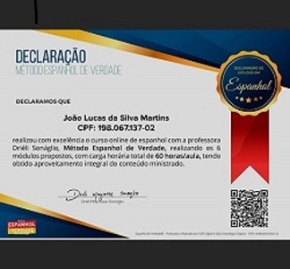

Currículo
Habilidades
Idiomas
- Inglês (básico)
- Espanhol (avançado)
Formação acadêmica
- 1° ano do ensino médio: Cerc (2019)
- 2° e 3° ano do ensino médio: Colégio Gau (2020 e 2021)
- Cursando faculdade de ciência da computação na UVA (1° período)
Empregos
- Por enquanto, ainda não adquiri alguma experiência em área de trabalho.
Sou fluente em espanhol; fiz um curso deste idioma chamado "Espanhol de Verdade", com uma duração de um ano.
